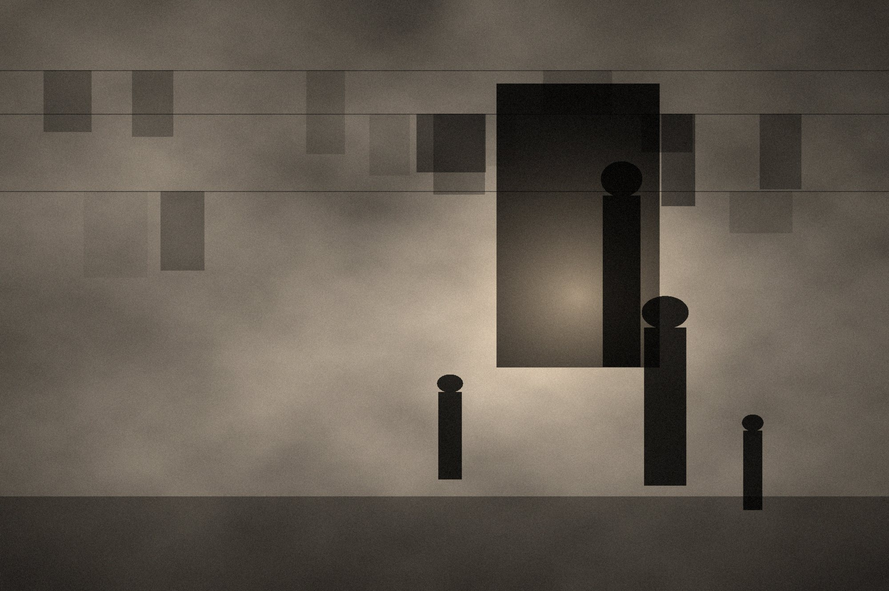
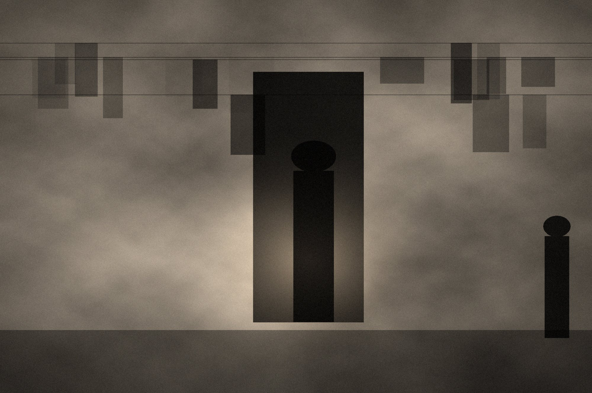
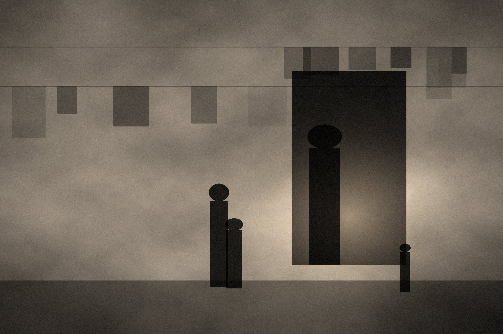
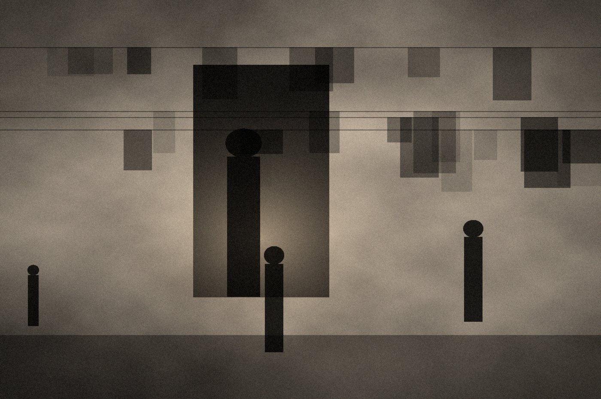

Preview · watermarked · 1600px. The master file is not available from this page.
The room was a storage bay eight months ago. It has running water, which the east wing no longer has, and so it became the place where limbs are made.
Three technicians work here. Forty-one children are on the waiting list, and most have been waiting since the summer, when the last shipment of casting material stopped at the crossing and did not move for eleven weeks.
I photographed here across four days. Every family gave written consent before I began. Two asked that their children not appear in campaign material, and that condition is attached to the file — it travels with the photograph wherever it goes.
The workshop opens at seven. By nine the corridor outside is full, and it stays full until the material runs out.




Photo story · 12 frames
The prosthetics workshop
A workshop rebuilt inside a damaged hospital wing, where three technicians fit limbs for children who have been waiting since the spring.
PERMITTED USE · Editorial, education, non-profit reporting
RESTRICTION · Faces of minors must not be cropped out of context
CREDIT · © YAW Studio
The high-resolution file is sent only after a licence is agreed.
- Reference
- YAW-PS-0418
- Location
- Rafah, Gaza
- Captured
- 27 November 2025
- Project
- Health after the ceasefire
- Topics
- Health · Disability · Children
- Language
- Arabic audio · English captions